Simulating Beam Deflection in Fusion
Finite Element Analysis (FEA) predicts how a structure responds to a load. The computer divides a model into small pieces called elements, calculates how each responds, and combines the results to predict the whole structure's behavior.
In the spreadsheet lab, you calculated and measured the deflection of a wooden beam. Here you will model a plastic beam in Fusion, apply a load, and examine its simulated behavior.
Different supports
This simulation fixes both end faces in place. It is a fixed-end beam, unlike the simply supported board in the spreadsheet lab. The material, dimensions, and supports differ, so the deflection results will differ too.
Create a Beam
Create a beam with a small face at its midpoint where you can apply the load.
- Create a new Part Design named Beam.
- Create a sketch on the XY plane—the flat surface containing the X and Y axes, like a tabletop. The Z axis points straight up or down from this plane.
- Use the Center Rectangle tool to draw a rectangle centered on the origin: 200 mm along X and 50 mm along Y.
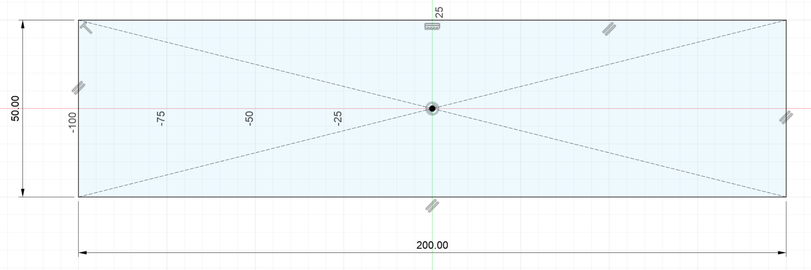
- Add a second centered rectangle: 10 mm along X and 50 mm along Y.
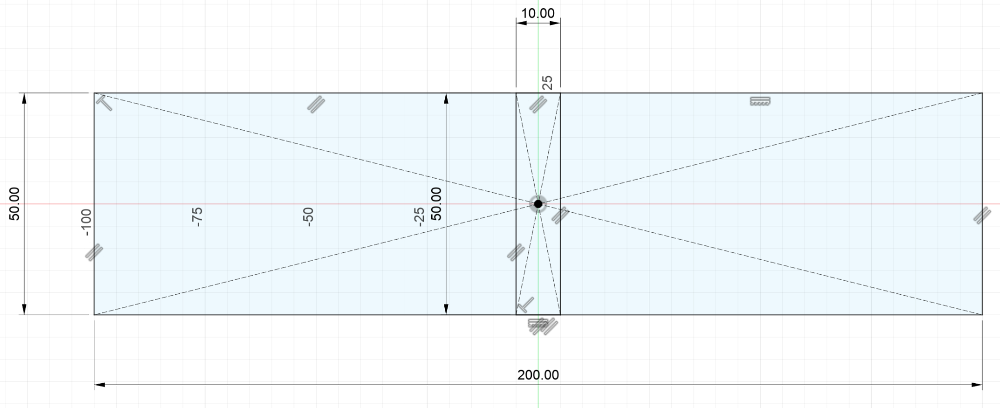
- Finish the sketch. Select all three sketch regions and extrude them downward −10 mm, leaving the sketch on top.
- In the Browser, expand Beam → Sketches. Click the visibility icon next to Sketch1 to show the sketch again.
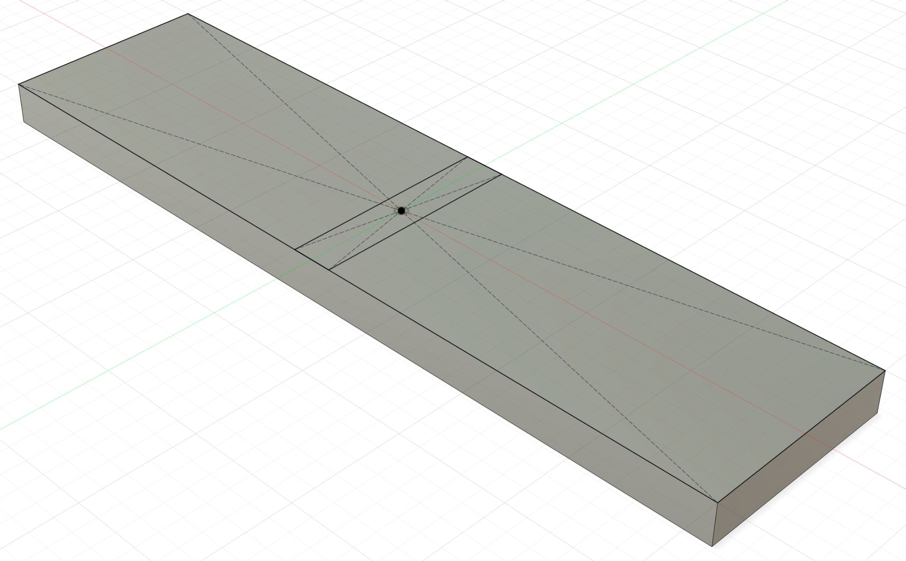
- Choose Modify → Split Face.
- For Faces to Split, select the entire upper face of the beam.
- For Splitting Tool, select the small rectangle at the midpoint.
- Uncheck the Extend Splitting Tool checkbox, then click OK.
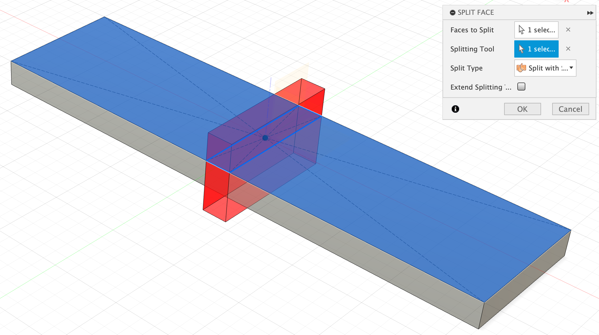
The upper surface should now have three separate faces.
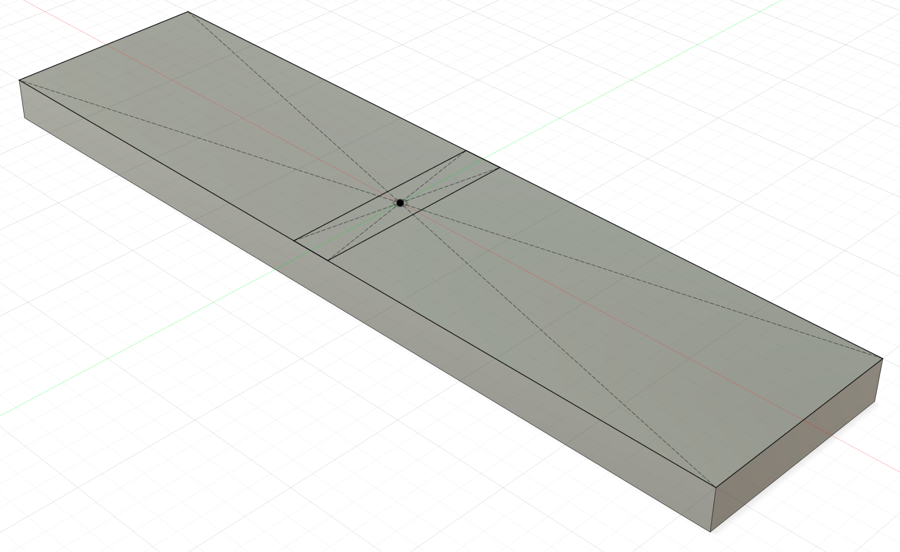
Create a Study
A study is a simulation with a material, supports, and loads you choose.
-
Switch from Design to the Simulation workspace.
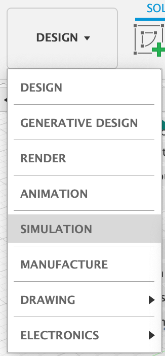
-
Choose Static Stress, then click Create Study. Close any extra introductory windows.
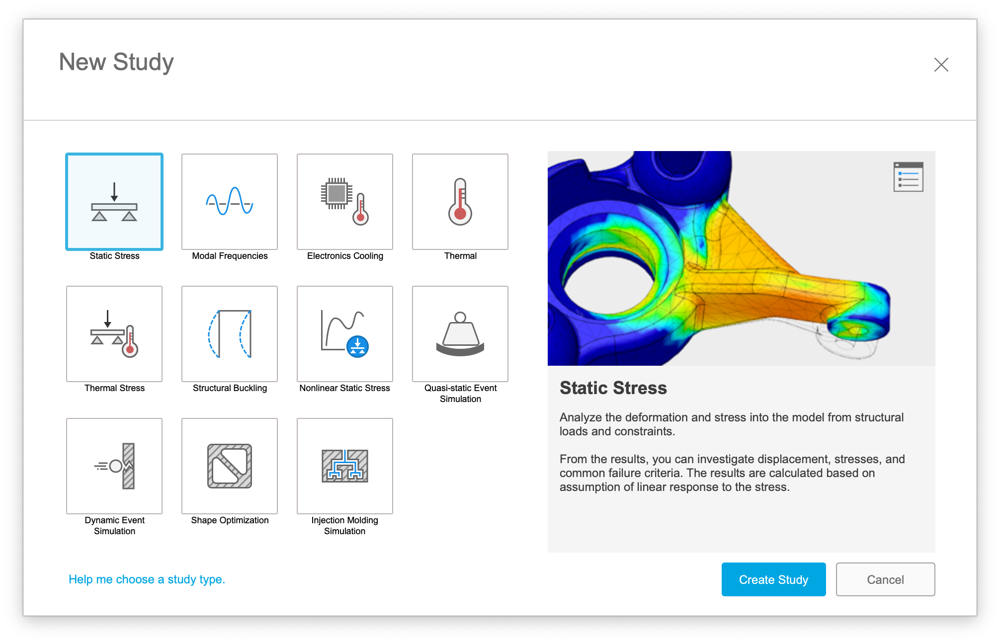
Your goal is to turn Pre-check from red
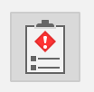
to green by choosing a material, setting constraints, and applying a load.
by choosing a material, setting constraints, and applying a load.
Choose a Material
- Click Materials .
- Move the pointer into the Study Material column and click the edit pencil.
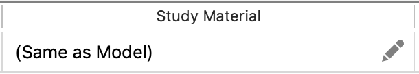
- Select PET Plastic.
- Select the material row and click Properties.
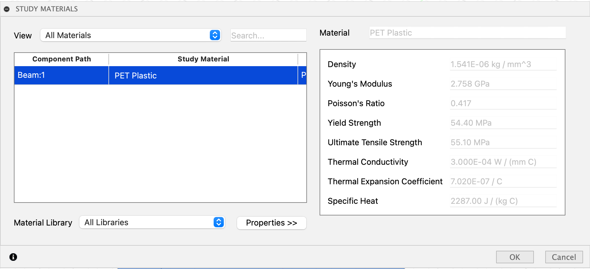
-
Find Young's Modulus. This is another name for the modulus of elasticity you used in your spreadsheet for the wooden beam you stood on. Fusion uses material properties like this to calculate the beam's response.
-
Click OK to close the properties and finish assigning the material.
Set Constraints
Constraints describe how a structure is supported. Here, both ends stay fixed.
- Click Constraints
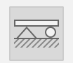
. - Leave the type set to Fixed.
- Select the two end faces of the beam as Targets.
- Leave all three axes selected, then click OK.
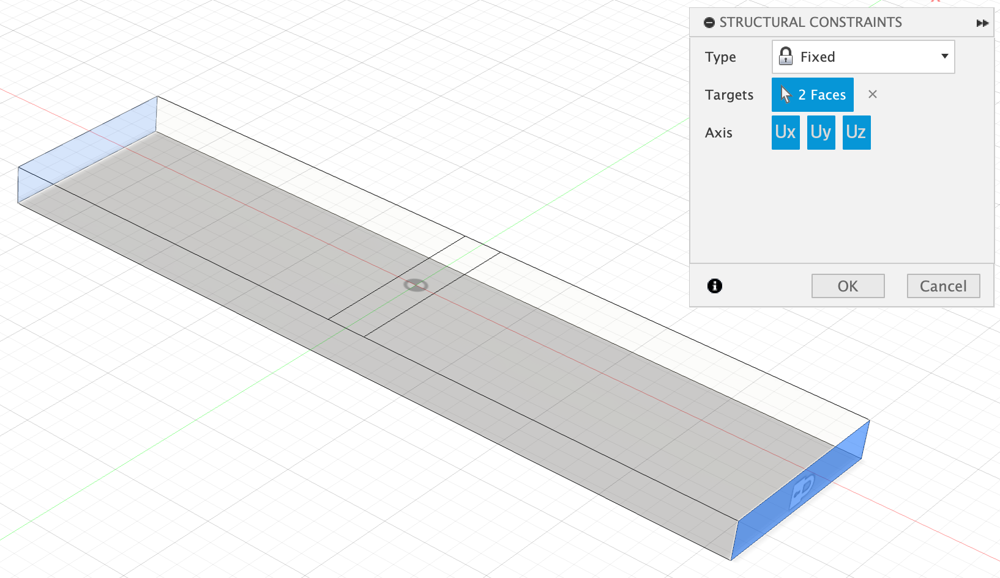
Apply a Load
- Click Loads
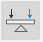
. - Use a Force load and select the small midpoint face on top of the beam.
- Click Change Units and choose lbforce (pounds-force).
- Enter 100 for Magnitude. Check that the load arrows point downward into the beam, then click OK.
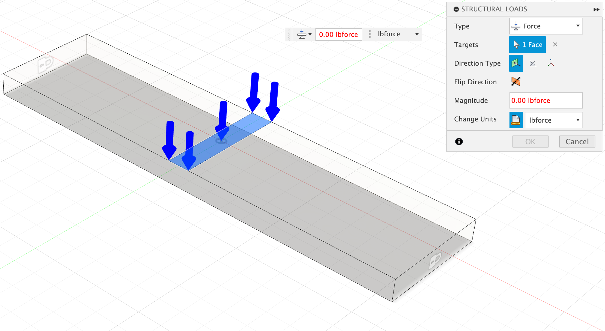
This applies a total force of 100 pounds-force, spread across the selected face.
Run the Simulation
Pre-check should now be green. If it is not, review the material, constraints, and load before continuing.
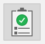
- Click Solve
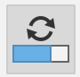
. - Click Solve 1 Study. Save your design in your Fusion student folder if prompted.
- Watch the Status column in the Job Status window.
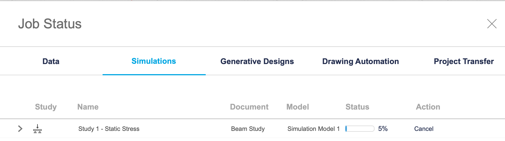
Fusion sends the simulation to remote computers to solve in the cloud. You can close the status window while it runs. Reopen it with Job Status
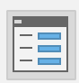
.Examine the Results
Completed results are stored with your project; you can reopen them without running the study again.
View Deformation
- When the job finishes, click Results
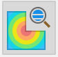
. - If Guided Results opens, click Results
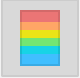
to inspect the results manually. -
Choose the Front view to see the beam along its long edge.
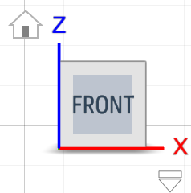
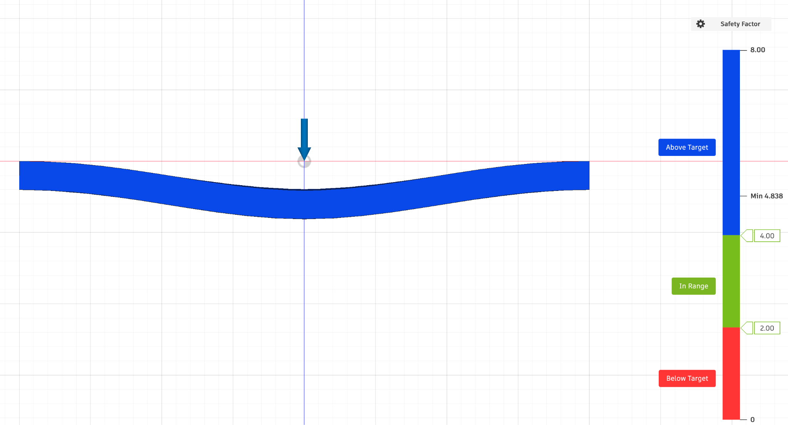
Deformation is a change in shape under a load. Fusion initially exaggerates the change to make it easier to see.
- Click Actual
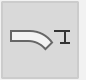
to view the predicted deformation at its actual scale. With only 100 lbforce applied, the deformation may be too small to see clearly. The Adjusted view exaggerates the deformation so you can see how the beam bends.
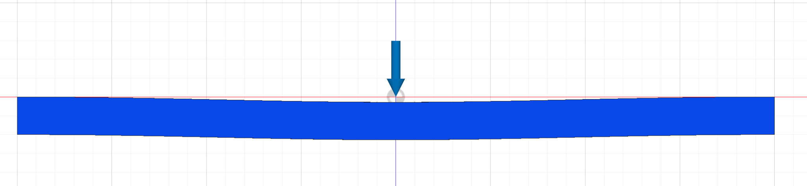
- Use Undeformed, Actual, and Adjusted to compare the original shape, the predicted shape, and an exaggerated view.
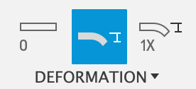
Safety Factor
The initial result is Safety Factor: a comparison of a material's strength with the stress predicted under the applied load. A higher value means more margin before reaching the strength limit used by the simulation.
For example, a structure with a load capacity of 10,000 pounds carrying 2,500 pounds has a load-based safety factor of 4. Engineers allow a margin for uncertain loads, material variation, and wear; the appropriate margin depends on the application.
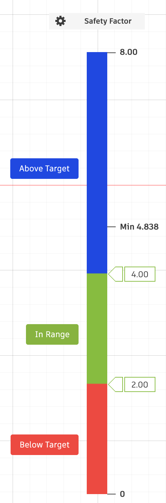
Stress
Stress is internal force per unit area within a material.
-
In the Browser, expand Stress and select Von Mises.
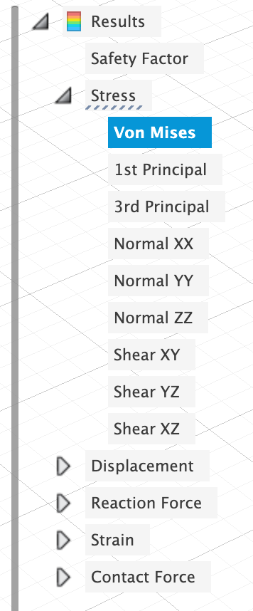
-
Return to the Home view
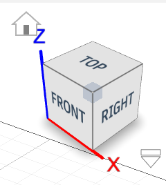
.
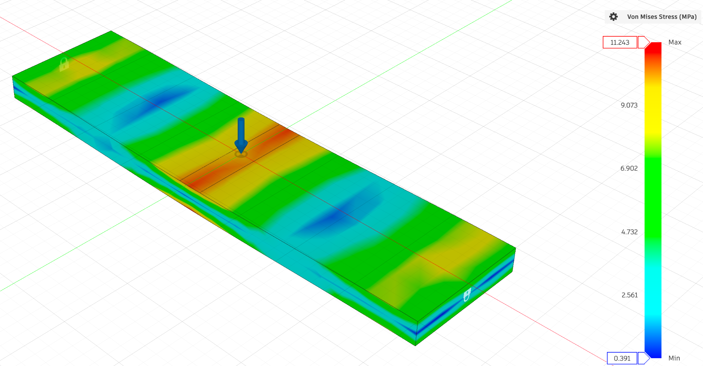
- Read the minimum and maximum values on the scale. The colors alone do not tell you whether one design has lower stress than another.
Displacement
Displacement is how far a point moves. You measured displacement at the middle of the wooden beam in the spreadsheet lab.
-
In the Browser, expand Displacement and select Total.
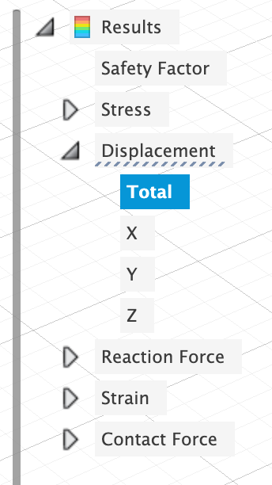
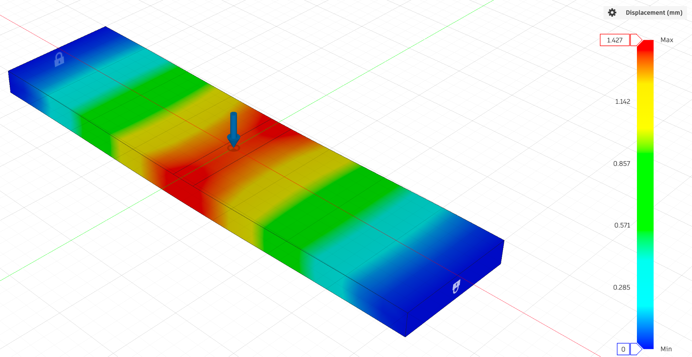
- Read the maximum displacement and its units on the scale.
For the same load and supports, a smaller maximum displacement indicates a stiffer design. Compare the numbers, not just the colors: each plot can show its own maximum in red, even when one design moves much less than another.
What About 3D-Printed Parts?
This simple simulation is useful for comparing designs, but it does not reliably predict how much weight your printed bridge will hold.
| What the model leaves out | Why it matters |
|---|---|
| Layer direction | Printed parts can be weaker between layers. This study treats the material as having the same properties in every direction. |
| Infill and voids | The CAD beam is a solid. A print with sparse infill has a different internal structure and stiffness. |
| Print quality | Temperature, extrusion, moisture, and layer bonding affect a real print but are not represented here. |
| Material differences | This practice study uses PET Plastic from Fusion's database. Your bridge will be printed in PLA. |
Use FEA to investigate where a design bends and where stresses concentrate. Physical tests are still needed to learn how the printed structure performs.
Turn In
- Post a screenshot of the Total Displacement results to your engineering notebook, with the beam, color scale, maximum value, and units visible.
- Save the beam model and simulation in your Fusion student folder.
Your Project
Now use the Build a Model or Prototype → Test and Evaluate → Optimize the Design cycle from NASA/JPL's Engineering Design Process to improve your bridge before printing.1
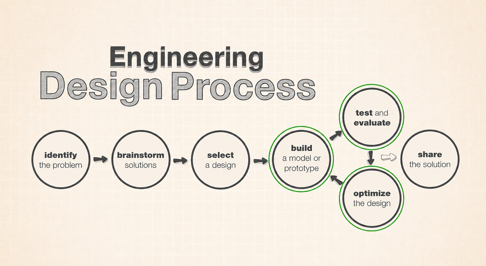
Build and Test Your First Design
-
With your group, finish designing your bridge in Fusion. Check it against the bridge challenge rules.
-
Prepare a model for simulation. You may simplify it to reduce solving time:
- Use the profile of just one side of the bridge.
- Approximate small or complicated features with simpler shapes.
- Model the bridge as one piece, even if you will print separate pieces and join them later.
Keep the features that carry the load. In your project notebook, briefly explain what you simplified. A one-piece model does not test the strength of the joints you will build.
-
Set up the material, constraints, and load to represent your bridge test as closely as your simplified model allows. The bridge rests on supports; do not assume the fixed ends from the practice beam represent those supports. Ask Mr. Willis if you are unsure how to model them.
-
Run simulation 1. Choose stress or displacement as your improvement goal. Save a screenshot of that result in your project notebook with the color scale, maximum value, and units visible.
Improve and Test Twice More
-
Identify an area of high stress or displacement. Make a targeted change to improve it, then run simulation 2. Record what you changed, why, and whether the result improved. Include a screenshot and compare the numerical values, not just the colors.
-
Use those results to make another targeted improvement, then run simulation 3. Again, record the change, your reason, a screenshot, and a comparison with the previous result.
Keep the material, load, supports, and chosen result type consistent across the three simulations so you can judge the effect of your design changes. Make improvements incrementally, rather than changing everything at once.
-
Decide where separate printed pieces will join. Mark the planned joints on a sketch or screenshot in your project notebook. Explain how their locations relate to areas of high stress or displacement, and how the joints will transfer load between pieces. High displacement shows movement; it does not necessarily identify the highest-stress area.
Get Approval Before Printing
- Show Mr. Willis your group's project notebook for approval. Be ready to explain your three simulation screenshots, the two rounds of changes, the results, and your planned joints. These are three bridge simulations; the practice beam simulation does not count.
Approval required
Do not 3D print any actual bridge pieces until your group has approval. Have all three simulation screenshots and your design notes ready in your project notebook.
-
Engineering Design Process diagram and step names: NASA/JPL-Caltech, Engineering Design Process Flow Chart. Green highlights added for this lab. ↩